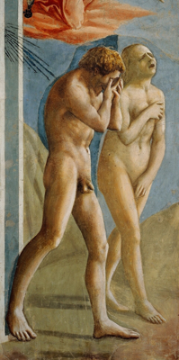
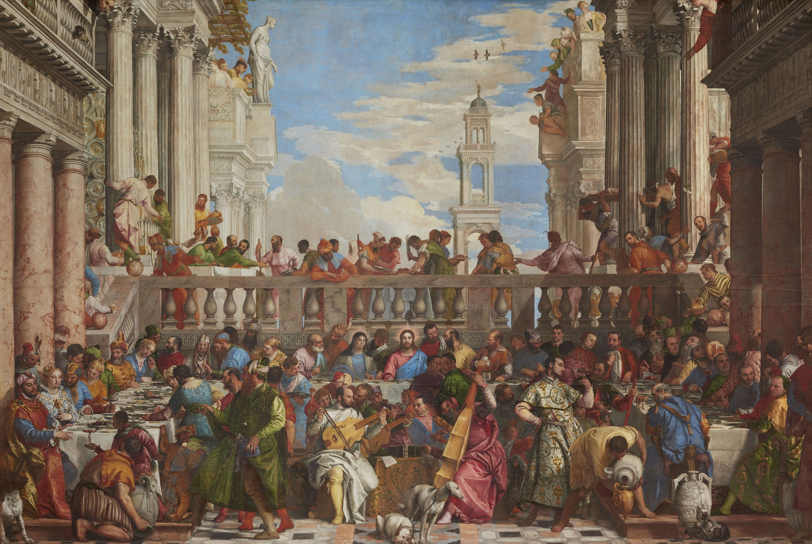

Giotto
La Déploration du Christ
Les corps se rapprochent autour du Christ. Les visages et les mains font sentir la douleur collective.
The Yorck Project · domaine public
De Giotto à Titien, découvrez comment les artistes de la Renaissance donnent aux figures des émotions, des gestes, du mouvement et une vie intérieure.
Apprendre à voir, oser regarder.
Les visages et les corps ne sont plus de simples signes : ils nous font éprouver le drame.
Les corps se rapprochent autour du Christ. Les visages et les mains font sentir la douleur collective.

Au milieu des armes et des torches, deux regards se rencontrent. Toute la tension tient dans ce face-à-face.

Les visages déformés par la honte et la douleur donnent une réalité physique au récit.
À vous de regarder : Quel détail vous fait ressentir l’émotion avant même de comprendre l’histoire ?
Une main, un regard, une posture suffisent à diriger le récit.

La main du Christ indique la direction ; les gestes relient trois moments d’une même histoire.

Chaque apôtre réagit différemment à l’annonce du Christ : les gestes deviennent un langage.

Les mouvements opposés et les bras tendus transforment l’espace en théâtre de l’action.
À vous de regarder : Quelle main dirige votre regard ?
Le peintre choisit l’instant décisif, ou multiplie les actions dans une même image.

La surprise des convives, la fuite et la poursuite font avancer le récit dans un paysage continu.

Chaque groupe discute, démontre ou écoute : une foule devient une conversation vivante.

Les gestes, les regards et les conversations composent une scène foisonnante où l’œil circule sans cesse.
À vous de regarder : Où commence l’histoire et où se poursuit-elle ?
Le portrait invite à deviner une pensée, une attention ou une émotion retenue.

Un regard direct, une bouche fermée : le portrait suggère une personnalité sans raconter d’événement.

Le visage et l’animal tournent dans une même direction : un événement invisible semble attirer leur attention.

Le regard, le léger mouvement du corps et le contraste des étoffes donnent une présence singulière au modèle.
À vous de regarder : Que suggère le regard sans nous le dire ?
Le mouvement peut être suggéré par le vent, un geste suspendu ou une spirale sculptée.

Les cheveux, les draperies et les figures portées par le vent animent une image presque musicale.

Trois corps s’enroulent autour d’un axe : la scène change quand on tourne autour de la sculpture.

Le saut de Bacchus et le cortège en mouvement saisissent l’instant où tout bascule.
À vous de regarder : Comment voit-on un mouvement dans une image immobile ?
Le regard circule entre les personnages : l’œuvre devient un monde vivant.

En haut, une apparition lumineuse ; en bas, les mains et les regards expriment l’urgence. Deux scènes se répondent.

Les bras des apôtres, la Vierge et la lumière guident le regard dans un grand élan vertical.

Au milieu du banquet, les personnages échangent des gestes minuscules : la grande composition reste pleine de vie.
À vous de regarder : Quel personnage attire d’abord votre regard, et pourquoi ?